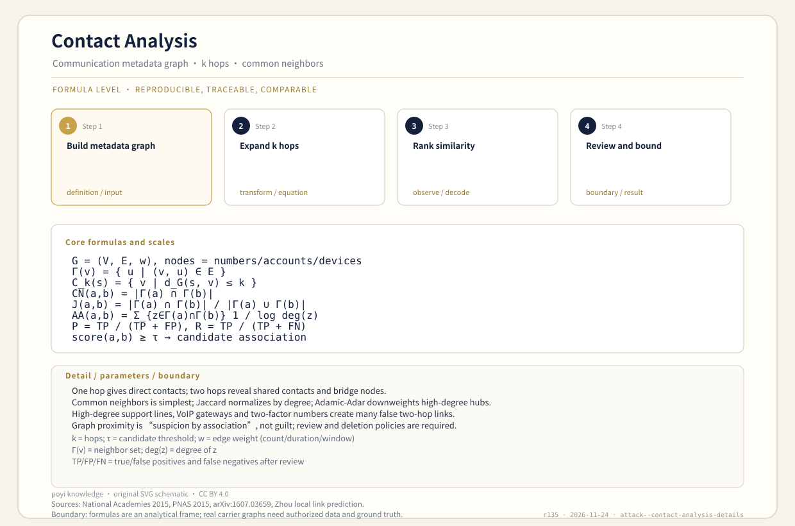
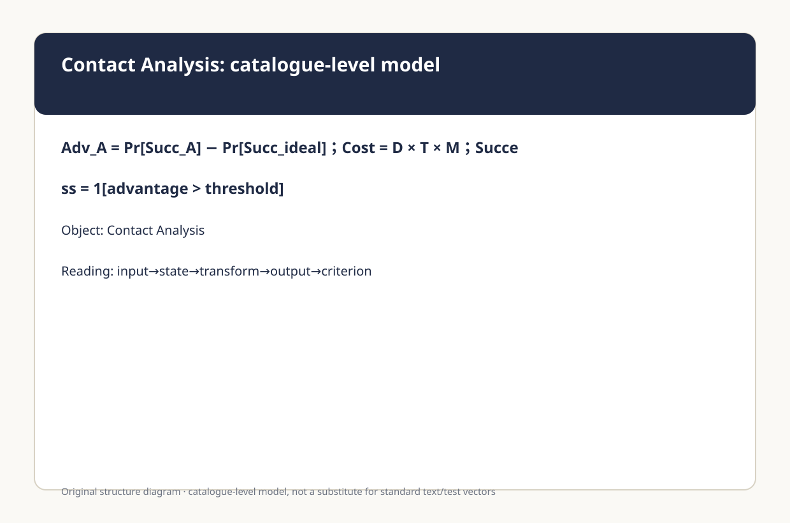

Principles
Attack: Contact Analysis (接触分析). Contact analysis, or contact chaining, turns communication metadata into a graph. Nodes are phone numbers, accounts, devices or identifiers; edges are calls, texts, emails or other contact events; edge weights can be counts, duration or a time window. Starting from a target s, the one-hop neighbors Γ(s) are direct contacts, and the k-hop set C_k(s)={v | d_G(s,v)≤k} is the extended contact chain. Candidate associations can be ranked with common neighbors and similarity scores: CN(a,b)=|Γ(a)∩Γ(b)|; Jaccard J(a,b)=|Γ(a)∩Γ(b)|/|Γ(a)∪Γ(b)|; Adamic-Adar AA(a,b)=Σ_{z∈Γ(a)∩Γ(b)}1/log deg(z). These scores are not proof of guilt; they turn “who may know whom” into rankable hypotheses. Evaluation uses a threshold τ: score≥τ marks a positive candidate, then precision=TP/(TP+FP) and recall=TP/(TP+FN) trade off. Larger k broadens coverage, but |C_k| and false positives grow. Investigation design is therefore constrained by hop count, time window, node type and review capacity.

Why it matters
Contact chains turn scattered records into network structure and help find direct contacts, shared contacts, bridge nodes and isolated subnetworks. They matter for counterterrorism, fraud, law enforcement and incident response, but they are also a privacy fault line: metadata has no content, yet it can reveal relationships, location, routines and social circles.
The key distinction: contact chaining produces “suspicion by association”, not guilt by association. Discovery, review, deletion and audit must remain separate so that graph edges are not treated as facts.
Applications
Steps: 1) define nodes, edges and a time window; 2) expand 1..k hops from the seed; 3) compute common neighbors, Jaccard and Adamic-Adar; 4) rank candidates by τ; 5) review shared numbers, NAT, support lines, switchboards and two-factor numbers; 6) record precision/recall and a deletion policy.
In adversarial settings, limit query scope, retention and use of results. Treat high-degree hubs such as support lines, VoIP gateways and SMS gateways separately; otherwise two hops will connect many unrelated users through a hub.
A shared name may belong to an algorithm, standard, event, person or term; this entry is responsible only for its catalogue binding and does not absorb adjacent records. If versions, regions or institutions define the name differently, the differences stay side by side.

Limits & attacks
Failure modes: metadata errors, number reuse, shared phones, NAT/carrier proxies, disposable numbers; encryption hides content, not metadata; k-hop expansion multiplies false positives; missing ground truth makes precision/recall unreliable; legal authorization and retention limits may make results unusable.
History
SIGINT contact chaining matured in the mid-to-late 20th century. After the 2013 Snowden disclosures of the NSA domestic telephone metadata program, three hops versus two hops and five years versus eighteen months became public disputes. A 2015 National Academies report treated contact chaining as one technical option; a 2016 open paper proposed auditable contact-chaining protocols; telephone-metadata research showed that high-degree hubs make “two hops” reach far beyond intuition.
Worked example & verification
Formal model and reproduction steps
[\mathrm{Adv}^{\mathrm{attack}}_A(\lambda)=\Pr[\mathrm{Game}_A(\lambda)=1]-\frac12]
Contact Analysis: the registered public parameters, key material or randomness, and message are mapped through the stated transformation to an output checked against the registered criterion. The worked example is a structural reproduction, not a new test vector; parameter ranges, standard versions and implementation details remain source-bound.
References
- Wikipedia search entry for 接触分析. https://zh.wikipedia.org/w/index.php?search=%E6%8E%A5%E8%A7%A6%E5%88%86%E6%9E%90
- Handbook of Applied Cryptography (Menezes, van Oorschot, Vanstone). https://www.cacr.math.uwaterloo.ca/hac/